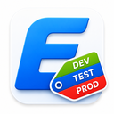
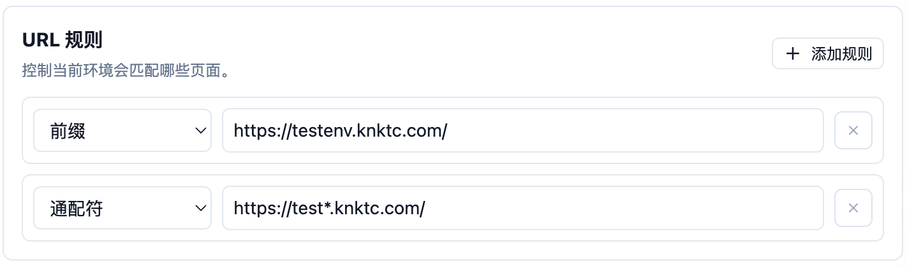
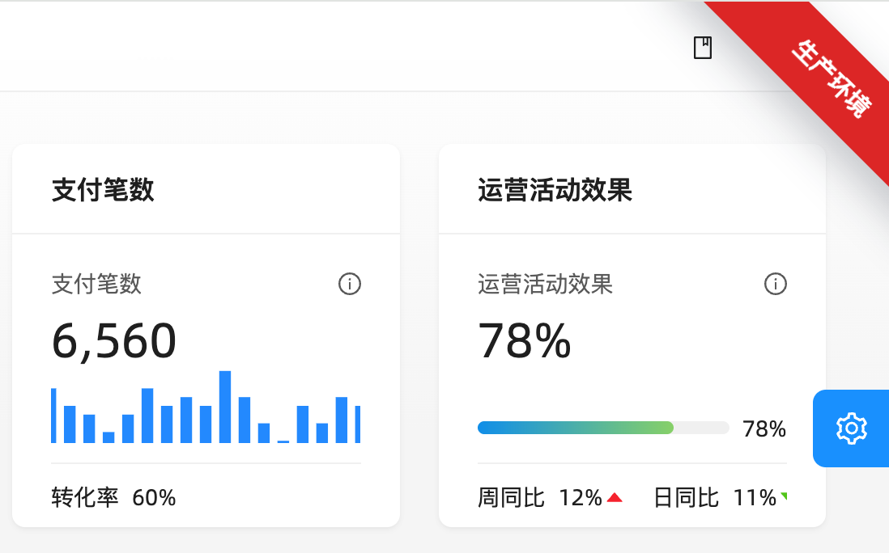
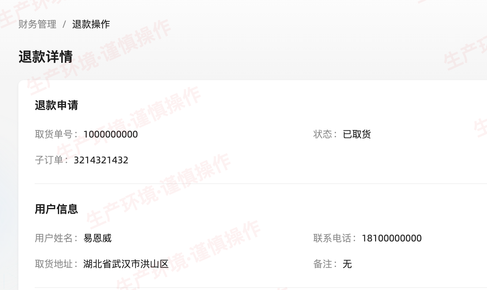
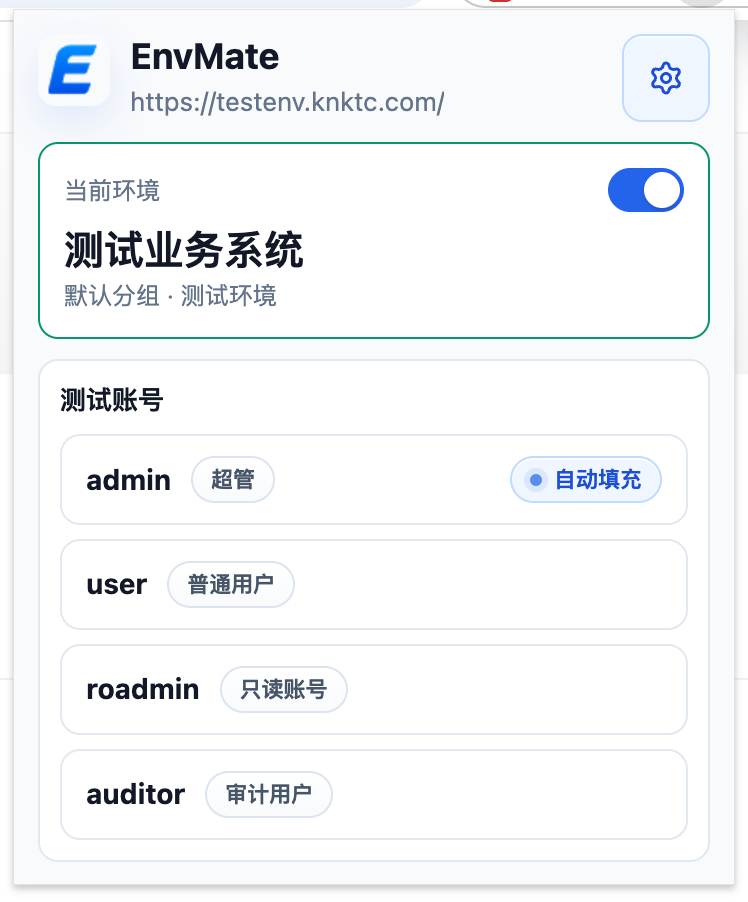
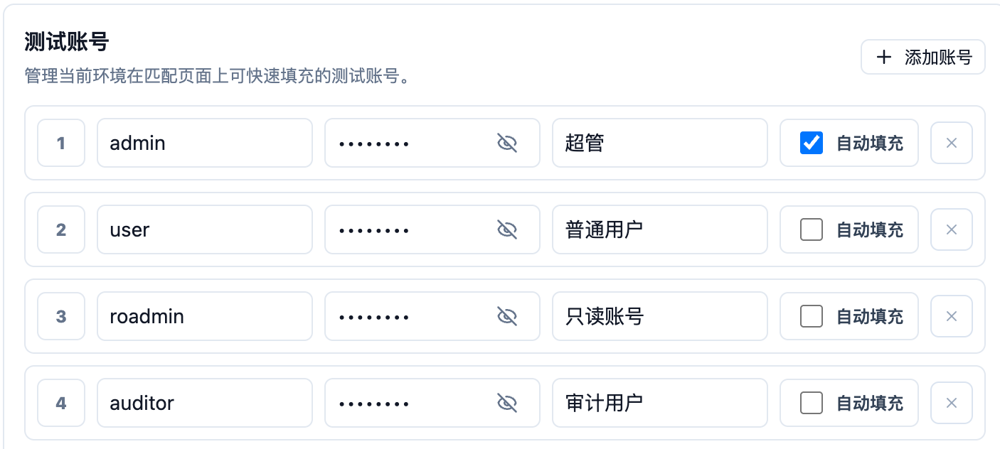

最近用 Codex 搓的一个 Chrome 插件终于上架了，名字叫 EnvMate。
如果你想直接安装，可以去 Chrome 应用商店里搜 EnvMate，也可以直接点这个链接进去：
https://chromewebstore.google.com/detail/envmate/mccdmjfnlkkjmcioapnehkmpgkblhiei

它本质上是一个给“多环境切换”场景准备的 Chrome 插件，解决的是一个很具体、但又特别容易反复踩坑的问题：很多系统的开发、测试、预发、生产环境长得几乎一模一样，切来切去的时候，人很容易手滑。
所以这次我就想试试看，能不能用一套比较轻的方式，把“看清当前环境”和“顺手切换测试账号”这两件事一起解决掉。
先放一张整体配置页面的截图：

我为什么想做这个插件
这些年做项目时，我越来越明显地感觉到，很多线上事故未必来自多复杂的技术问题，反而经常出在一些很朴素的地方，比如“看错环境了”。
同一个系统挂着好几套环境，页面结构、菜单位置、按钮样式都差不多。你明明以为自己在测试环境里点按钮，结果实际打开的是生产；或者本来只是想随手验证一下，最后却把操作落到了不该落的地方。
这种问题说起来不复杂，但只要你平时需要频繁在多套系统之间来回切换，就知道它有多烦。
另一个很实际的点，是最近一些内部测试系统开始往 HTTPS 迁移，但证书又是自签名的。这样一来，Chrome 原本那套还算顺手的用户名密码记忆和自动填充，在某些场景下就没那么稳定了。你得反复找测试账号、重新填账号密码，节奏很容易被打断。
所以我最后想做的，并不是一个很重的“环境管理平台”，而是一个足够轻、打开就能用的小插件：
- 先让我一眼看出来当前到底在哪个环境。
- 再让我在需要的时候，能顺手把对应环境的测试账号填进去。
EnvMate 就是沿着这个思路做出来的。
EnvMate 现在能做什么
这个插件目前做的事情不算复杂，但基本都围着“减少误操作”和“提高切换效率”展开。
1. 按 URL 规则识别当前环境
你可以给不同环境配置 URL 匹配规则，比如通配符、前缀匹配或者正则。只要页面地址命中了对应规则，插件就能识别出当前页面属于哪个环境。
这样做的好处是，它不依赖页面一定要改代码，也不要求系统本身提供什么专门的环境标识。很多时候只要域名或者路径有规律，就已经够用了。

2. 用足够明显的方式把环境标出来
识别出来之后，下一步就是“别让自己看漏”。
所以 EnvMate 现在支持几种比较直接的提示方式：
- 页面角标
- 页面水印
- 页面标题前缀
- 角标和水印组合
这些能力的重点其实不是“做得多精致”，而是“做得足够显眼”。
比如生产环境可以一直挂一个高对比度角标，测试环境可以铺一个淡一点的水印。这样就算页面本身几乎一模一样，你切回标签页或者重新聚焦窗口时，也能很快意识到自己现在到底在操作哪套环境。


3. 给不同环境维护测试账号
光是“认出来”还不够，很多时候你还得“登进去”。
所以插件里也支持给不同环境维护测试账号。切到某个页面之后，可以直接从插件里选择对应账号来填充，不用再去翻文档、翻聊天记录，或者从密码管理器里慢慢找。
这一点对那些用了自签名 HTTPS 的内部系统尤其有用。因为浏览器原生自动填充在这些场景下不一定总是顺手，而把账号和环境绑定在一起，反而更符合日常测试时的使用习惯。
这里也顺便强调一下：插件只负责在你主动操作时填充信息，不会自动提交表单。


4. 用分组管理一批环境
如果你手上的系统不止一个，或者同一条业务线下面挂着开发、测试、预发、生产好几套环境，那配置很快就会变乱。
所以我在插件里也加了分组能力，可以按产品、项目或者业务线去拆开维护。这样后面环境再多一点，也不至于所有配置全堆在一起。
这个插件适合什么人
如果你的日常工作里经常会遇到下面这些情况，那 EnvMate 大概率是有点用的：
- 经常在开发、测试、预发、生产环境之间来回切换
- 多个系统长得太像，容易看错环境
- 需要频繁登录不同测试账号
- 内部系统逐步迁到自签名
HTTPS，浏览器原生自动填充没以前那么顺手
它解决的不是一个特别宏大的问题，而是一个很具体、很高频、而且真的容易让人出错的问题。
这次用 Codex 做，体验也挺有意思
严格来说，这就是一次挺典型的 vibe coding。
因为我这次并不是先把所有细节都设计到很完整，再一点点照着实现，而是先把核心目标盯住，然后让 Codex 跟着我的想法一边写、一边改、一边对齐交互和细节。
这种过程和传统那种“先把需求文档写满，再按计划开发”的节奏不太一样。更像是你先把方向感讲清楚，然后不断把“不够顺手”的地方往前推，直到它真的开始像一个自己会用的工具。
对这种偏个人效率、偏工具型的项目来说，我自己觉得这种方式还挺合适的。它的好处不只是快，更重要的是，你可以比较低成本地把一个原本还只是模糊念头的东西，尽快落成一个能装进浏览器里、可以真用的插件。
安装方法
如果你只是想直接装起来用，可以去 Chrome 商店：
如果你想顺手看看实现方式，也可以直接去 GitHub 上看源码：
- GitHub: https://github.com/knktc/EnvMate
我还额外上传了一份到百度网盘。如果你这边直接下载插件不太方便，也可以用这个链接：
如果你是手动安装 crx，可以简单按下面这几个步骤来：
- 在 Chrome 地址栏打开
chrome://extensions/。 - 打开右上角的“开发者模式”。
- 如果浏览器允许直接安装，就把下载好的
crx文件拖进去，按提示确认安装。 - 如果你的 Chrome 不允许直接安装
crx，可以先把它解压出来，再点“加载已解压的扩展程序”，选择解压后的目录完成安装。
如果你平时也经常在一堆看起来差不多的系统里切来切去，或者也正好被自签名 HTTPS 环境下不太稳定的账号填充体验折腾过，那这个插件也许正好能帮你少踩几个坑。
后面如果我再补一些更顺手的能力，比如更方便的环境切换辅助、更多页面识别细节，或者更适合团队共享的配置方式，我也会继续把它慢慢迭代下去。